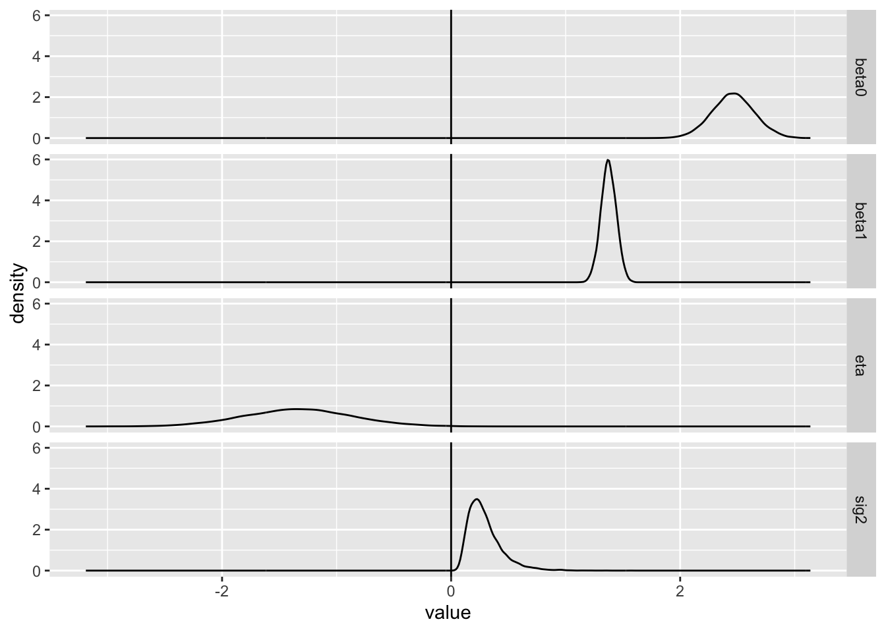
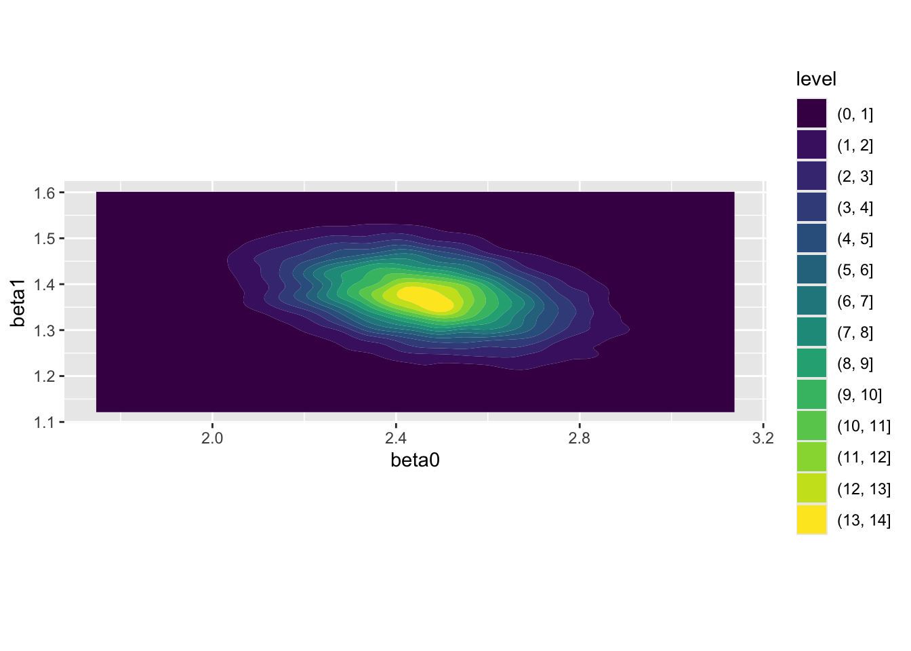

Code
llNormal <- function(pars, y, X){
beta <- pars[1:ncol(X)]
sigma2 <- exp(pars[ncol(X)+1])
-1/2 * (sum(log(sigma2) + (y - (X%*%beta))^2 / sigma2))
}The previous post, perhaps the toughest of the series, showed how some special settings within R’s numerical optimisation optim() function can be used to estimate how much uncertainty there is in our estimates of the the model parameters \(\beta\). We covered the concept that information and uncertainty are inversely related: the more information we have, the less uncertain we are, and vice versa. We estimated parameter uncertainty around the point that maximised (log) likelihood by asking the algorithm to take small steps from this highest point in different directions (dimensions, in effect variables), and report how steep the fall is in different directions. Steeper falls along a dimension imply less uncertainty and so more more information and narrower confidence intervals; as usual, the converse is also true. The component returned by optim() which reports the results of this ‘stepping out’ is a square matrix called the Hessian, which can be inverted to produce estimates of the variances and covarainces of each of the parameters being estimated in our model.
The aims of this post are to show how estimates of uncertainty around the point estimates produced from the Hessian, based around the curvature measured around the point of maximum likelihood, are similar to those produced using a much more extensive (and computationally intensive) interrogation of the likelihood surface using a grid-search approach. It will also show how representations of joint uncertainty for parameter values can be generated using the multivariate normal distribution.
Let’s return once again to the toy dataset used in the last two posts, whose true parameters we know because we made them up; and also the log likelihood function:
llNormal <- function(pars, y, X){
beta <- pars[1:ncol(X)]
sigma2 <- exp(pars[ncol(X)+1])
-1/2 * (sum(log(sigma2) + (y - (X%*%beta))^2 / sigma2))
}# set a seed so runs are identical
set.seed(7)
# create a main predictor variable vector: -3 to 5 in increments of 1
x <- (-3):5
# Record the number of observations in x
N <- length(x)
# Create a response variable with variability
y <- 2.5 + 1.4 * x + rnorm(N, mean = 0, sd = 0.5)
# bind x into a two column matrix whose first column is a vector of 1s (for the intercept)
X <- cbind(rep(1, N), x)
# Clean up names
colnames(X) <- NULLTo extract estimates of uncertainty about the uncertainty of each of these parameters, we used optim() with the options shown below, and then inverted the matrix to go from information to uncertainty.
fuller_optim_output <- optim(
par = c(0, 0, 0),
fn = llNormal,
method = "BFGS",
control = list(fnscale = -1),
hessian = TRUE,
y = y,
X = X
)
fuller_optim_output$par
[1] 2.460675 1.375425 -1.336438
$value
[1] 1.51397
$counts
function gradient
79 36
$convergence
[1] 0
$message
NULL
$hessian
[,1] [,2] [,3]
[1,] -3.424917e+01 -3.424917e+01 2.716036e-05
[2,] -3.424917e+01 -2.625770e+02 -2.557859e-05
[3,] 2.716036e-05 -2.557859e-05 -4.500002e+00hess <- fuller_optim_output$hessian
inv_hess <- solve(-hess)
inv_hess [,1] [,2] [,3]
[1,] 3.357745e-02 -4.379668e-03 2.275558e-07
[2,] -4.379668e-03 4.379668e-03 -5.132867e-08
[3,] 2.275558e-07 -5.132867e-08 2.222221e-01We were especially interested in the first two rows and columns of this matrix, as they correspond to uncertainty in \(\beta = \{ \beta_0, \beta_1 \}\).
inv_hess_betas <- inv_hess[1:2, 1:2]
inv_hess_betas [,1] [,2]
[1,] 0.033577454 -0.004379668
[2,] -0.004379668 0.004379668Back in part five, we used this same dataset to show how the log likelihood varies for various, equally spaced, candidate values for \(\beta_0\) and \(\beta_1\) (having fixed \(\eta = \exp({\sigma^2})\) at its true value). This led to the followng map of the landscape1
library(tidyverse)
candidate_param_values <- expand_grid(
beta_0 = seq(-15, 15, by = 0.05),
beta_1 = seq(-15, 15, by = 0.05)
)
feed_to_ll <- function(b0, b1){
pars <- c(b0, b1, log(0.25))
llNormal(pars, y, X)
}
candidate_param_values <- candidate_param_values |>
mutate(
ll = map2_dbl(beta_0, beta_1, feed_to_ll)
)
candidate_param_values |>
ggplot(aes(beta_0, beta_1, z = ll)) +
geom_contour_filled() +
geom_vline(xintercept = 0) +
geom_hline(yintercept = 0) +
labs(
title = "Log likelihood as a function of possible values of beta_0 and beta_1",
x = "beta0 (the intercept)",
y = "beta1 (the slope)"
)
Within the above we can see that the log likelihood landscape for these two parameters looks like a bivariate normal distribution, we can also see a bit of a slant in this normal distribution. This implies a correlation between the two candidate values. The direction of the slant is downwards from left to right, implying the correlation is negative.
Firstly let’s check that the correlation between \(\beta_0\) and \(\beta_1\) implied by the Hessian is negative. These are the off-diagonal elements, either first row, second column, or second row, first column:
inv_hess_betas[1,2][1] -0.004379668inv_hess_betas[2,1][1] -0.004379668Yes they are!
As mentioned previously, the likelihood surface produced by the gridsearch method involves a lot of computations, so a lot of steps, and likely a lot of trial and error, if it were to be used to try to find the maximum likelihood value for the parameters. By contrast, the optim() algorithm typically involves far fewer steps, ‘feeling’ its way up the hill until it reaches a point where there’s nowhere higher. 2 When it then reaches this highest point, it then ‘feels’ the curvature around this point in multiple directions, producing the Hessian. The algorithm doesn’t see the likelihood surface, because it hasn’t travelled along most of it. But the Hessian can be used to infer the likelihood surface, subject to subject (usually) reasonable assumptions.
What are these (usually) reasonable assumptions? Well, that the likelihood surface can be approximated by a multivariate normal distribution, which is a generalisation of the standard Normal distribution over more than one dimensions.3
We can use the mvrnorm function from the MASS package, alongside the point estimates and Hessian from optim, in order to produce estimates of \(\theta = \{ \beta_0, \beta_1, \eta \}\) which represent reasonable uncertainty about the true values of each of these parameters. Algebraically, this can be expressed as something like the following:
\[ \tilde{\theta} \sim Multivariate Normal(\mu = \dot{\theta}, \sigma^2 = \Sigma) \]
Where \(\dot{\theta}\) are the point estimates from optim() and \(\Sigma\) is the implied variance-covariance matrix recovered from the Hessian.
Let’s create this MVN model and see what kinds of outputs it produces.
library(MASS)
point_estimates <- fuller_optim_output$par
vcov <- -solve(fuller_optim_output$hessian)
param_draws <- MASS::mvrnorm(
n = 10000,
mu = point_estimates,
Sigma = vcov
)
colnames(param_draws) <- c(
"beta0", "beta1", "eta"
)
head(param_draws) beta0 beta1 eta
[1,] 2.564978 1.375636 -0.30407255
[2,] 2.440111 1.367774 -1.16815289
[3,] 2.775332 1.338583 -0.05574937
[4,] 2.283011 1.481799 -0.26095102
[5,] 2.695635 1.228565 -1.18369341
[6,] 2.686818 1.483601 -0.44262364We can see that mvrnorm(), with these inputs from optim() produces three columns: one for each parameter being estimated \(\{ \beta_0, \beta_1, \eta \}\). The n argumment indicates the number of draws to take; in this case, 10000. This number of draws makes it easier to see how much variation there is in each of the estimates.
df_param_draws <-
param_draws |>
as_tibble(
rownames = 'draw'
) |>
mutate(
sig2 = exp(eta)
) |>
pivot_longer(
-draw,
names_to = "param",
values_to = "value"
)
df_param_draws |>
ggplot(aes(x = value)) +
geom_density() +
facet_grid(param ~ .) +
geom_vline(xintercept=0)
There are a number of things to note here: firstly, that the average of the \(\beta_0\) and \(\beta_1\) values appear close to their known ‘true’ values of 2.5 and 1.4 respectively. Secondly, that whereas the \(\eta\) values are normally distributed, the \(\sigma^2\) values derived from them are not, and are never below zero; this is the effect of the exponential link between quantities. Thirdly, that the implied values of \(\sigma^2\) do appear to be centred around 0.25, as they should be as \(\sigma\) was set to 0.50 in the model.
And forthly, that the density around \(\beta_1\) is more peaked than around \(\beta_0\). This concords with what we saw previously in the filled contour map: both the horizontal beta0 axis and vertical beta1 axis are on the same scale, but the oval is broader along the horizontal axis than the vertical axis. This in effect implies that we have more information about the true value of \(\beta_1\), the slope, than about the true value of \(\beta_0\), the intercept.
We can also use these draws to reproduce something similar to, but not identical to, 4 the previous filled contour map:
# param_draws |>
# as_tibble(
# rownames = 'draw'
# ) |>
# ggplot(aes(x = beta0, y = beta1)) +
# geom_point(alpha = 0.1) +
# coord_cartesian(xlim = c(-10, 10), ylim = c(-10, 10))
param_draws |>
as_tibble(
rownames = 'draw'
) |>
ggplot(aes(x = beta0, y = beta1)) +
geom_density_2d_filled() +
coord_equal()
Once again, we see the same qualities as the contour map produced by interrogating the likelihood surface exhaustively: the distribution appears bivariate normal; there is a greater range in the distribution along the beta0 than the beta1 axis; and there is evidence of some negative correlation between the two parameters.
This post has shown how optim(), which in its vanilla state only returns point estimates, can be configured to also calculater and report the Hessian, a record of instantaneous curvature around the point estimates. Even without a fine-grained and exhausive search throughout the likelihood surface, this measure of curvature can be used to produce similar measures of uncertainty to the more exhausive approach, in a fraction of the number of computations.
More importantly, it can be used to generate draws of plausible combinations of parameter values, something denoted as \(\tilde{\theta}\) earlier. This is something especially useful for producing honest quantities of interest, which both tell users of models something they want to know, while also representing how uncertain we are in this knowledge.
We’ll cover that in the next post… 5
I’ve narrowed the space between values slightly, and increased the range of permutations of values to search through, for an even more precise recovery of the likelihood landscape.↩︎
In practice, the algorithm seeks to minimise the value returned by the function, not maximise it, hence the negative being applied through the argument fnscale = -1 in the control argument. But the principle is identical.↩︎
This means that, whereas the standard Normal returns a single output, the Multivariate Normal returns a vector of outputs, one for each parameter in \(\theta\), which should also be the length of the diagonal (or alternatively either the number of rows or columns) of \(\Sigma\).↩︎
The values will not be identical because the values for \(\eta\), and so \(\sigma^2\), have not been fixed at the true value in this example.↩︎
I was expecting to cover it in the current post, but this is probably enough content for now!↩︎